정보처리기능사 (2007-09-16 기출문제)
1과목: 전자 계산기 일반
1. 그림과 같은 논리회로에서 출력 X에 알맞은 식은?(단, A, B, C는 입력임)
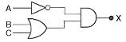

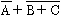
(정답률: 85%)

2. 두 비트를 더해서 합(S)과 자리올림수(C)를 구하는 반가산기에서 올림수(Carry) 비트를 나타낸 논리식은?
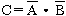
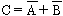
(정답률: 53%)
3. 진리표가 다음 표와 같이 되는 논리회로는?
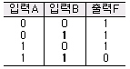
- AND 게이트
- OR 게이트
- NOR 게이트
- NAND 게이트
(정답률: 79%)
4. 컴퓨터시스템에서 명령어를 실행하기 위하여 CPU에서 이루어지는 동작 단계의 하나로 기억장치로부터 명령어를 읽어 들이는 단계는?
- 재기록(write back) 단계
- 해독(decoding) 단계
- 인출(fetch) 단계
- 실행(execute) 단계
(정답률: 65%)
5. 2진수 1010을 그레이코드로 변환시키면?
- 0101
- 0111
- 1101
- 1111
(정답률: 59%)
6. 다음 게이트에서 입력 A, B에 대한 출력 Y의 논리식은?
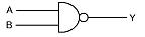
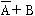
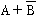
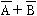
(정답률: 84%)
7. 기억장치 맨 처음 장소부터 1byte 마다 연속된 16진수의 번호를 부여하는 번지는?
- symbolic address
- absolute address
- relative address
- mnemonic address
(정답률: 58%)
8. 명령어 내의 오퍼랜드 부분의 주소가 실제 데이터의 주소를 가지고 있는 포인터의 주소를 나타내는 방식으로 데이터 처리에 대한 유연성이 좋으나 주소 참조 횟수가 많다는 단점이 있는 주소지정방식은?
- 즉시주소지정
- 간접주소지정
- 직접주소지정
- 계산에 의한 주소지정
(정답률: 58%)
9. 레지스터에 새로운 데이터를 전송하면 먼저 있던 내용은 어떻게 되는가?
- 기억된 내용에 아무런 변화가 없다.
- 먼저 내용은 지워지고 새로운 내용만 기억된다.
- 먼저 내용은 다른 곳으로 전송되고 새로운 내용만 기억된다.
- 누산기(accumulator)에서 덧셈이 이루어진다.
(정답률: 80%)
10. Flip-Flop의 종류에 해당되지 않는 것은?
- R Flip-Flop
- JK Flip-Flop
- RS Flip-Flop
- T Flip-Flop
(정답률: 77%)
11. 오퍼랜드(Operand) 자체가 연산대상이 되는 주소지정방식은?
- 즉시주소지정(Immediate Addressing)
- 직접주소지정(Direct Addressing)
- 간접주소지정(Indirect Addressing)
- 묵시적주소지정(Implied Addressing)
(정답률: 50%)
12. 중앙처리장치에서 명령이 실행될 차례를 제어하거나 특정 프로그램과 관련된 컴퓨터 시스템의 상태를 나타내고 유지해 두기 위한 제어 워드로서 실행중인 CPU의 상태를 포함하고 있는 것은?
- PSW
- SP
- MAR
- MBR
(정답률: 76%)
13. 다음 보기의 연산은?
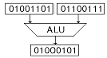
- AND 연산
- OR 연산
- MOVE 연산
- Complement 연산
(정답률: 82%)
14. 명령어는 연산자 부분과 주소 부분으로 구성되는데 주소(operand)부분의 구성 요소가 아닌 것은?
- 데이터의 주소자체
- 명령어 순서
- 데이터 종류
- 데이터가 있는 주소를 구하는데 필요한 정보
(정답률: 45%)
15. 현재 수행 중에 있는 명령어 코드(code)를 저장하고 있는 임시 저장 장치는?
- 인덱스 레지스터(Index Register)
- 명령 레지스터(Instruction Register)
- 누산기(Accumulator)
- 메모리 레지스터(Memory Register)
(정답률: 72%)
16. 불(Boolean) 대수의 정리 중 옳지 않은 것은?
- 1+A = A
- 1 · A = A
- 0+A = A
- 0 · A = 0
(정답률: 74%)
17. 다음은 명령어 인출 절차를 보인 것이다. 올바른 순서는?
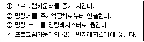
- ①→②→③→④
- ③→②→①→④
- ④→②→①→③
- ①→③→④→②
(정답률: 48%)
18. 주기억장치, 제어장치, 연산장치 사이에서 정보가 이동되는 경로이다. 빈 부분에 알맞은 장치는?
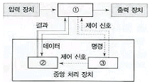
- ① 제어장치 ② 주기억장치 ③ 연산장치
- ① 주기억장치 ② 연산장치 ③ 제어장치
- ① 주기억장치 ② 제어장치 ③ 연산장치
- ① 제어장치 ② 연산장치 ③ 주기억장치
(정답률: 77%)
19. 16진수의 3D를 10진수로 변환하면?
- 48
- 61
- 62
- 49
(정답률: 63%)
20. 레지스터, 가산기, 보수기 등으로 구성되는 장치는?
- 제어장치
- 입/출력 장치
- 기억장치
- 연산장치
(정답률: 76%)
2과목: 패키지 활용
21. 어떤 릴레이션 R의 정의에서 애트리뷰트의 개수를 무엇이라고 하는가?
- 개체(Entity)
- 뷰(View)
- 차수(Degree)
- 기수(Cardinality)
(정답률: 64%)
22. 학생 테이블에 데이터를 입력한 후, 주소 필드가 누락되어 이를 추가하려고 할 경우 적합한 SQL 명령은?
- MORE TABLE
- ALTER TABLE
- ADD TABLE
- MODIFY TABLE
(정답률: 67%)
23. SQL문의 DROP 명령문에서 사용되는 RESTRICT 옵션에 대한 설명으로 가장 적절한 것은?
- 데이터베이스 스키마뿐만 아니라 테이블, 도메인 등 모든 원소 삭제
- 중첩된 질의를 수행한 결과로 구한 튜플들 중에 같은 값을 모두 삭제
- 제거될 테이블을 참조하는 모든 제약과 뷰가 자동적으로 삭제
- 제거할 요소가 다른 개체에서 참조되지 않는 경우에만 삭제
(정답률: 60%)
24. 데이터베이스관리시스템(DBMS; Database Management System)의 주요 기능에 속하지 않는 것은?
- 관리기능
- 정의기능
- 조작기능
- 제어기능
(정답률: 72%)
25. 관계형 데이터베이스의 속성 또는 필드에서 나타낼 수 있는 값의 범위를 의미하는 것은?
- 도메인
- 차수
- 널(NULL)
- 튜플
(정답률: 61%)
26. 기업체의 발표회나 각종 회의 등에서 빔 프로젝트 등을 이용하여 제품에 대한 소개나 회의 내용을 요약 정리하여 청중에게 효과적으로 전달하기 위한 도구를 의미하는 것은?
- 프레젠테이션
- 데이터베이스
- 스프레드시트
- 워드프로세서
(정답률: 84%)
27. 스프레드시트 작업에서 반복되거나 복잡한 단계를 수행하는 작업을 일괄적으로 자동화시켜 실행하는 기능은?
- 부분합
- 시나리오
- 매크로
- 슬라이드
(정답률: 84%)
28. 프레젠테이션에서 각 페이지의 기본 단위를 의미하는 것은?
- 매크로
- 블록
- 슬라이드
- 프로젝터
(정답률: 83%)
29. 윈도용 프리젠테이션에서 하나의 화면을 구성하는 개개의 요소들을 무엇이라 하는가?
- 시나리오
- 개요
- 스크린팁
- 개체(object)
(정답률: 71%)
30. SQL에서 기본 테이블 생성시 사용하는 명령어는?
- CREATE
- SELECT
- DROP
- UPDATE
(정답률: 74%)
3과목: PC 운영 체제
31. 도스에서 DIR 명령은 현재 디렉터리와 파일 등에 관한 정보를 표시해 주는 명령이다. 이 명령의 옵션(Option)중 하위 디렉터리의 정보까지 표시해 주는 명령은?
- DIR/P
- DIR/A
- DIR/S
- DIR/W
(정답률: 46%)
32. “윈도 98”에서 디스켓을 포맷할 때 포맷형식으로 선택할 수 없는 것은?
- 전체
- 빠른 포맷
- 삭제된 파일 복구
- 시스템 파일만 복사
(정답률: 57%)
33. “윈도 98”에서 제어판에 있는 디스플레이 항목의 기능이 아닌 것은?
- 해상도 지정
- 배경무늬 변경
- 화면보호기능
- 마우스 포인트의 모양 변경
(정답률: 73%)
34. “윈도 98”의 탐색기에서 비연속적인 여러 개의 파일을 한꺼번에 선택하기 위해 사용하는 키는?
- Alt
- Tab
- Ctrl
- Shift
(정답률: 69%)
35. 디렉터리 내용의 파일을 열거하는데 사용되는 UNIX 명령어는?
- cd
- ls
- tar
- pwd
(정답률: 60%)
36. 컴퓨터 센터에 작업을 지시하고 나서부터 결과를 받을 때까지의 경과시간은?
- 서치 시간(search time)
- 액세스 시간(access time)
- 프로세스 시간(process time)
- 턴어라운드 시간(turnaround time)
(정답률: 58%)
37. 현재의 작업 디렉터리를 나타내기 위한 UNIX 명령은?
- cd
- pwd
- kill
- cp
(정답률: 68%)
38. 작업량이 일정한 수준이 될 때까지 모아 두었다가 한꺼번에 일시에 처리하는 방식은?
- multi-programming system
- time-sharing processing system
- real-time processing system
- batch processing system
(정답률: 57%)
39. 현재 사용 중인 DOS의 버전을 화면에 표시할 때 사용하는 명령은?
- CLS
- VER
- DIR
- DEL
(정답률: 58%)
40. "윈도 98"에서 하드디스크에 있는 파일을 휴지통에 버리지 않고 바로 삭제하려고 한다. 파일 선택 후 어떤 키를 눌러야 하는가?
- Del
- Alt + Del
- Ctrl + Del
- Shift + Del
(정답률: 70%)
41. What is the name of the program that can fix minor errors on your hard drive?
- SCANDISK
- FDISK
- FORMAT
- MEM
(정답률: 52%)
42. “윈도 98”의 클립보드에 대한 설명으로 옳지 않은 것은?
- 윈도에서 자료를 일시적으로 보관하는 장소를 제공한다.
- 선택된 대상을 클립보드에 오려두기를 할 때 사용되는 단축키는 Ctrl + v이다.
- 가장 최근에 저장된 파일 하나만을 저장할 수 있다.
- 클립보드에 현재 화면 전체를 복사하는 기능키는 Print Screen 이다.
(정답률: 73%)
43. 다음 ( )안의 내용으로 적절하지 않은 것은?
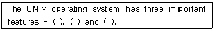
- kernel
- shell
- file system
- compiler
(정답률: 57%)
44. 운영체제에서 가장 기초적인 시스템 기능을 담당하는 부분으로 관리자(Supervisor), 제어프로그램(Control Program), 핵(Nucleus) 등으로 부르며 프로세스관리, CPU 제어, 입/출력제어, 기억장치관리 등의 기능을 수행하는 것은?
- 커널(kernel)
- 파일 시스템(file system)
- 인터페이스(Interface)
- 데이터관리(Data control)
(정답률: 66%)
45. 시스템의 성능을 극대화하기 위한 운영체제의 목적으로 옳지 않은 것은?
- 처리능력 증대
- 사용가능도 증대
- 신뢰도 향상
- 응답시간 지연
(정답률: 80%)
46. “윈도 98”의 단축키 중 활성창을 닫고 프로그램을 종료하는 것은?
- Ctrl + C
- Ctrl + Esc
- Alt + F4
- Alt + Tab
(정답률: 80%)
47. “윈도 98”에서 설치된 응용프로그램을 삭제하는 방법 중 가장 바람직한 방법은?
- 제어판에서 프로그램 추가/삭제 아이콘을 이용하여 삭제한다.
- 윈도 탐색기로 삭제할 응용프로그램 폴더를 찾아서 [Delete]키를 이용하여 삭제한다.
- 시작 메뉴를 클릭하여 프로그램 메뉴를 선택한 후 삭제할 응용프로그램을 휴지통으로 Drag & Drop 한다.
- 내 컴퓨터 창을 열어서 삭제할 응용프로그램의 실행 파일을 휴지통으로 Drag & Drop 한다.
(정답률: 60%)
48. 운영체제를 기능상으로 분류했을 때 제어프로그램에 해당하지 않는 것은?
- 감시프로그램(supervisor program)
- 서비스프로그램(service program)
- 데이터관리프로그램(data management program)
- 작업제어프로그램(job control program)
(정답률: 66%)
49. “윈도 98"의 특징으로 옳지 않은 것은?
- 플러그 앤 플레이 기능이 있다.
- 네트워크에 필요한 기능이 추가되어 모뎀이 없어도 통신이 가능하다.
- 멀티태스킹이 가능하여 여러 작업을 동시에 실행할 수 있다.
- 프로그램이나 폴더 등을 아이콘화 하여 사용자가 편리하게 접근할 수 있다.
(정답률: 72%)
50. 도스(MS-DOS)에서 화면의 내용을 깨끗이 지워주는 역할을 하는 명령은?
- CD
- PATH
- CLS
- DATE
(정답률: 71%)
4과목: 정보 통신 일반
51. 16개 국 간의 정보통신망 구성에서 모두 망형으로 구성하려면 소요 통신회선 수는 몇 회선이 필요한가?
- 240
- 175
- 120
- 32
(정답률: 53%)
52. 모뎀(MODEM)의 기능에 속하지 않는 것은?
- 아날로그 신호를 디지털 신호로 변환한다.
- 디지털 신호를 아날로그 신호로 변환한다.
- 원거리 전송에 주로 이용된다.
- 전이중통신방식을 반이중통신방식으로 변환한다.
(정답률: 41%)
53. OSI 7계층 참조모델에서 인접 개방형 시스템간의 데이터 전송, 에러 검출, 오류 회복 등을 취급하는 계층은?
- 물리적 계층
- 데이터 링크 계층
- 응용 계층
- 세션 계층
(정답률: 40%)
54. 다음 중 교환방식에 따른 통신망에 해당하지 않는 것은?
- 회선 교환망
- 물류 교환망
- 메시지 교환망
- 패킷 교환망
(정답률: 57%)
55. 다음 중 통신제어 장치의 기능이 아닌 것은?
- 전송로와 전기적인 인터페이스
- 통신회선의 접속과 절단 제어
- 전송 데이터의 에러제어
- 데이터 통신 신호의 변환
(정답률: 32%)
56. 데이터통신에서 변조속도를 표시하는 단위는?
- 캐릭터/초
- 보(Baud)
- 비트/분
- 바이트/분
(정답률: 49%)
57. 다음 중 데이터통신의 일반적 특징으로 가장 적합하지 않은 것은?
- 시스템의 신뢰도가 높다
- 에러제어방식이 요구된다.
- 광대역 전송이 곤란하다.
- 데이터를 반복하여 전송할 수 있다.
(정답률: 63%)
58. 컴퓨터를 이용하여 기존의 문자나 숫자 정보뿐만 아니라 텍스트, 이미지, 오디오, 비디오 등 여러 가지 미디어 형태의 정보를 통합하여 처리하는 기술을 무엇이라고 하는가?
- 패킷 무선망 기술
- 전화망 기술
- 멀티미디어 기술
- 대용량 전송 기술
(정답률: 74%)
59. 다음 중 PCM 방식의 특징으로 가장 적합한 것은?
- 레벨 변동이 크다.
- 아날로그 통신방식이다.
- 양자화 잡음이 있다.
- 양질의 전송로에만 사용된다.
(정답률: 36%)
60. LAN의 전송매체로 전송대역폭이 가장 큰 것은?
- 동케이블
- UTP케이블
- 동축케이블
- 광케이블
(정답률: 68%)